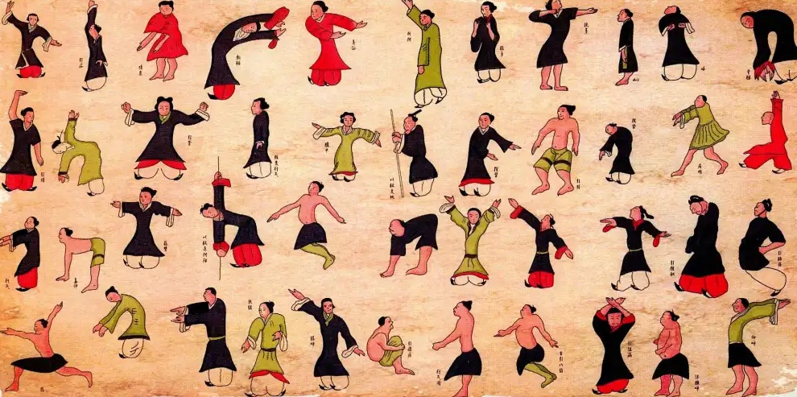
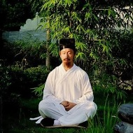
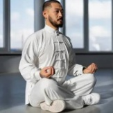
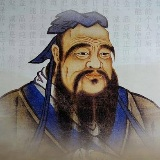
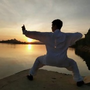
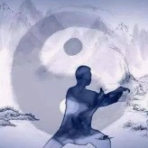
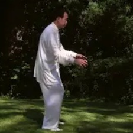

气功的流派
在气功的发展历程中，涌现出了多种侧重点各异的练习形式。除了旨在防病治病的功法外，还有一些功法侧重于精神修养，或是为了增强体能、灵活性与耐力而设计。中国相关文献记载了众多不同的流派：有些流派与道家、儒家、佛家等中国传统哲学思想紧密相关；另一些则主要源于武术与医术体系。尽管各流派风格迥异，但贯穿其中的核心要素是对“气”（即生命能量）的运用。下面所述的流派可被视为气功最主要的几大类别。
气功的发展历经数千年。在“调气”这一核心实践的不同侧面中，逐渐演化出了各式各样的功法；这些功法或旨在养生祛病，或致力于灵性修养 的提升与深化，亦或旨在增强体魄与技艺。受佛教、道教、儒家思想等中国传统学说，以及传统中医养生术与武术的影响，气功界形成了诸多不 同的流派。

气功主要按来源背景分为道、儒、佛、武、医五大传统门派，也按功法特点分为导引、吐纳、静定、存想、周天五大派别。
按渊源分类（五大流派）
- 道家气功：特点：讲究性命双修、内丹修炼和返璞归真。代表：武当气功、内丹功。
- 佛家气功：特点：注重明心见性、戒律与禅定（以静为主）。代表：少林内劲一指禅、禅宗气功、大乘止观。
- 儒家气功：特点：作为修身养性、正心诚意和治学之本。代表：静坐修养、存心养性。
- 武家气功：特点：注重强化肌肉、发劲和技击应用（如硬气功）。代表：少林易筋经、铁砂掌。
- 医家气功：特点：强调保健、防病、治病与延年益寿。代表：六字诀、八段锦、五禽戏。
按功法特点分类（五大派别）
- 导引派：以肢体动态为主，配合意念与呼吸（动中求静）。
- 吐纳派：以呼吸调节（调息）为主，通过深长细匀的呼吸排浊纳清。
- 静定派：以心神调节（调心）为主，通过入静达到精神安定。
- 存想派：通过意念在体内想象（存思）气血运行或特定景象。
- 周天派：通过意气配合，打通体内经络（如大小周天循环）。
我们下面主要讲按来源背景分的五大传统门派的核心特征。
道家气功
道家思想是中国文明的基石之一。作为气功体系中的重要流派，它至今仍深刻影响着众多的修炼体系与理论。道家修炼的终极目标是证得长生，并超越时空局限，进入纯粹精神与本源意识交融的圆满境界。为实现这一理想，道家认为首要步骤在于固守精元、培育生命能量（即“气”），并将二者转化为精神活力。在随后的修炼阶段，通过恰当的功法，修行者的精神有望回归至“虚”的境界。道家修炼的核心理念在于将人体视为宇宙宏观世界的缩影（即“小宇宙”）；因此，气功修炼旨在使个体与天地运行的节律达到和谐统一。 传统道家气功流派的一个显著特征是运用所谓的“能量之门”——即人体上特定的部位，通过这些部位可以直接从环境中摄取“气”。除了日常饮食与呼吸的空气外，浩瀚宇宙（包括日月星辰的能量）也是生命能量的重要源泉。在这一能量摄取过程中，意念观想发挥着至关重要的作用。遵循“意导气行”的原则，修行者利用意念引导外部能量进入体内，并使其在经络与脏腑间循环流转。

长生之道：道家气功的核心特征。道家气功是气功各流派中哲学内涵最丰富、体系最复杂且最具系统性的一派。与主要侧重于治病的“医家气功”不同，道家气功旨在通过对人体与意识的转化，实现与宇宙的和谐、自我觉悟以及极致长生（在概念上即“成仙”）。
核心理念与特征：性命双修。这是道家修行的基石。“性”：通过冥想与虚静功夫，修养心性、精神、品格及心理平衡。“命”：修炼肉体，强健筋骨，调节内分泌与内气（“气”），以逆转衰老并保持生命活力。道家认为，若只练形体而不修心性，修行便会停滞不前；若只修心性而不转化肉体，则身体这一载体便会虚弱不堪。“我命由我不由天”。道家思想本质上是积极进取的。它否定了人体衰败与老化过程不可改变的观点。修行者相信，通过系统的训练，他们能够干预生物体自然衰退的过程，从而在本质上重写自身的生物钟。修行的最高境界是无为（不费力地行动或不行动），此时修行者让宇宙原初能量（元气）自然流动，修复身体，无需人为干预。
佛家气功
“佛”（Buddha）一词意为“觉悟者”。它直指佛教教义的核心目标：精神觉悟与证得佛果。为了达到这种觉悟境界，佛教徒长期以来主要修习静坐冥想。 通过这种修习，他们力求超越中国传统观念中所谓的“后天”心智层面，从而重获那种属于“先天”本源觉知的精神状态。 他们期望借此打破无休止的业力轮回，获得深层的内心宁静。 与道家不同，佛教徒最初往往将肉身视为通往觉悟之路的障碍，并不怎么重视身体健康或延年益寿。直到菩提达摩（在中国被称为“达摩”）的教法传入，人们才开始认识到身体对于精神成长的重要性，并将其视为修行的基石。 于是，静功与动功开始相辅相成。 气功因其能够同时锻炼身心，有效地促进了精神层面的修行，并日益影响着中国佛教徒的日常修持。 尽管在一定程度上接纳了身体锻炼，但佛教哲学始终强调道德修养更为重要。佛教关于不杀生、慈悲以及克服欲望、妄想与执着的道德戒律，深刻地塑造了佛教气功这一流派。

寂静与解脱之道：佛家气功的核心特征。在佛教中，通常所说的“气功”传统上是与禅定（Ch'an/Zen）及密宗观想（visualization）相结合的。与侧重于身体疗愈的医家气功或侧重于延年益寿的道家气功不同，佛家气功将肉体主要视为一种“筏”或“载具”。其终极目标是心智的解脱（即开悟）、业力的净化以及对苦难的超越。
核心理念与特征：心主形（以心控形，明心见性）。佛教认为肉体是由心识生起的暂时性存在。因此，佛家气功的修习由内而外，将“调心”置于首要地位。通过平息心念并进入深层的禅定状态（三摩地），体内的能量（气）便能自然达到平衡，无需刻意用意念引导。以纯粹的寂静为基石（以静为主，动静相兼）。佛家修行的基石在于“静”。修行者致力于培养一种不被外部感官刺激或内心杂念所扰乱的心境。当引入动作（如在武术传统中）时，其特定目的是为了打破因久坐而造成的身体滞涩，从而使修行者能够重返更深层的禅定状态。业力与心性的净化（重在修心与明因果）。佛家气功的修习离不开道德戒律（Sila）的约束。
儒家气功
儒家是气功的另一大流派。其关于家庭与国家内人际共处的理论，在很长一段时间内塑造了中国社会的面貌。数世纪以来，儒家教义将个人的日常生活方式与个人及群体的道德自我认知紧密联系在一起。在儒家看来，社会与政治结构中出现的不平衡或冲突，主要源于内心的失序。这一理论建立在一个前提之上：许多身体疾患同样源于心理失衡。因此，儒家积极倡导个人过一种道德高尚的生活，旨在将个体塑造为更优秀的社会成员，并循序渐进地改善整个社会。儒家将社会视为宇宙秩序的缩影；通过认识并遵循自然的普遍法则，儒家修习者学会了尊重社会规范。气功练习在这一过程中发挥了重要的辅助作用。通过修习气功所达到的内心平衡与宁静状态，构成了儒家社会和谐共处秩序的基石。此外，气功训练还能稳固修习者的身心健康，这可谓一种可喜的益处。如此一来，个人不仅成为了社会中和谐的一员，更因生命活力的增强而具备了更高的社会生产力。

社会与道德契合之道：儒家气功的核心特征。儒家气功独树一帜，因为它完全世俗化、面向社会，并与日常生活中的伦理道德深度融合。与其他流派——如追求医疗康复（医家）、宇宙长生（道家）或超脱尘世（佛家）——不同，儒家气功侧重于培养高尚品格，以便更好地服务社会与家庭。它将内功修炼作为基础手段，旨在实现心智清明、情绪自控与政治操守的正直。
核心理念与特征：追求“浩然之气”。“浩然之气”由孟子提出，是儒家气功的标志性概念。这是一种宏大而刚毅的内在能量，源于一生中始终践行正义、责任与良知。能量的正直性：儒家认为，当言行与道德准则一致时，内在能量便会自然变得充沛、浩大、正直且无畏。若违背伦理，这种能量便会瞬间崩塌，导致人陷入焦虑并感到身心俱疲。“中庸之道”的标准。儒家修炼完全避免极端的生理状态。练习中不涉及剧烈的屏息、快速的能量运行或复杂的意象观想。其目标是达到“中和”——即心境既不过度亢奋也不迟钝沉闷，从而能在高压的社会环境中做出理性的决策。积极入世而非避世修炼。儒家气功无需隐居山林或遁入寺院，而是在繁忙的书斋、官署或家中进行。静坐修炼所养成的宁静心境，必须直接转化为复杂人际交往中的沉稳与从容。
武家气功
纵观中国历史，气功武术的演变经历了两个截然不同的阶段。在早期（即第一阶段），人们模仿好斗动物的动作进行练习，以此为可能发生的肢体格斗做准备。这一阶段的目标有二：一是增强肌肉力量并训练速度；二是学习有效的战术，以便在击败对手的同时，不让自己面临过大的生命风险。这一时期的发展主要侧重于气功的外部肢体层面。然而，达摩祖师的见解与教导引发了练习方式的变革，标志着发展进入了第二阶段。此时，重心转向了训练心智以引导“气”，并协调肢体与呼吸。正如中国僧侣从达摩那里学会了将精神修行与身体训练相结合，中国的武术家们也开始利用精神修养来提升身体机能。他们运用心智来增强内在力量并掌控“气”，同时利用“气”来精进格斗技艺。除了达摩的影响外，武术的发展也深受“医用气功”的影响。关于人体经络、穴位（力量点）及能量中心的知识显得尤为重要。这些知识不仅有助于更好地保护自身身体的薄弱部位，还能让人通过针对性的打击更轻易地击败对手。

力量与效能：武家气功的核心特质。武家气功（亦称实战气功）摒弃了抽象的神秘主义色彩，转而专注于身体机能、结构稳固性及爆发性力量的输出。该流派将内功修炼与身体素质训练直接结合，旨在将人体打造为既高效又致命的武器，同时也是坚不可摧的护盾。
核心理念与特质：内外兼修。武家气功遵循一条根本准则：“外练筋骨皮，内练精气神”。“外”指身体抗击打训练、拉伸及结构对齐；“内”则涉及深层腹式呼吸、意念（意）的运用以及能量的爆发式释放（发劲）。两者相辅相成，缺一不可：单纯的肌肉力量缺乏结构上的整体连贯性，而纯粹的能量若无坚实的身体架构支撑，也无法有效释放威力。刚柔相济。真正的武术劲力绝非僵硬死板，而是一种能在接触瞬间（极短时间内）从彻底放松（“柔”）瞬间切换至如钢铁般致密坚硬（“刚”）的能力。放松状态确保了极致的速度与流畅的动作，而仅在发力点施加张力，则能安全有效地传递质量与劲力。练气筑基（构建防护层）。武家气功的重要组成部分在于培育“卫气”（防护之气），并将其向外引导至皮肤与筋膜之中。
医家气功
医家气功与中医理论紧密相连，主要基于经络学说及“气”的转化理念。其核心目标始终在于预防保健、治愈疾病以及延年益寿。作为一种疗愈手段，气功实践中形成了两种同样行之有效的方法。第一种方法由练习者自行进行特定功法，通过个人努力来克服体内现有的气机失调或经络阻滞。第二种方法则是所谓的“能量传输”；在此过程中，气功师运用特定技法发出具有疗愈功效的“气”，并将其传输给患者。这种方法旨在调和患者体内的能量，恢复被称为“气”的生命能量的顺畅流动。这不仅要求施治的气功师具备高超的功力——尤其是高尚的道德操守——同时也需要患者在特定情境下保持高度的放松与信任。 医疗气功的发展也汲取了其他气功流派的精髓。各类气功流派的共同目标均在于防病治病、增强机体防御能力以及延年益寿。因此，不仅是医疗气功，几乎所有气功流派都包含旨在维护健康的功法内容。不过，各流派为实现不同功效而发展出了各具特色的技法。例如，少林内劲一指禅功法体系也可部分归类为医疗气功；除其他益处外，它还能帮助构建高效的免疫系统。总体而言，气功的医疗流派通过动静结合的练习，兼顾了人体的生理与心理层面。

生理健康之道：医家气功是传统气功中最重实用、强调防病治病的流派。它不求得道成仙，也不求技击防身，而是紧密结合中医理论，通过自我调理来实现“正气存内，邪不可干”的健康状态。
医家气功的核心特征：以治病、防病、强身、抗衰老为主要目的。它是中国传统气功五大流派（医、儒、道、佛、武）中，最注重医学实用价值和生理健康的流派。医家气功的核心特征辩证施功：如同中医治病需要“辨证论治”，医家气功讲究因人、因病、因时而异。不同体质或患有不同疾病的人，需要练习不同的功法或采取不同的意守部位，绝非千篇一律。调理脏腑：功法设计紧密围绕中医的脏腑经络学说。通过特定的呼吸、动作和意念，直接针对特定的经络和脏腑进行调节，从而达到疏通经络、调和气血、平衡阴阳的目的。动静双修：强调“动以养形，静以养神”。它将形体运动（动功，如八段锦、五禽戏）与精神静修（静功，如内养功、强壮功）有机结合，实现身心的全面调节。强调安全：医家气功极其注重安全性，功法温和、循序渐进。在练习过程中极力避免“走火入魔”或产生副作用，非常适合体弱多病者或中老年人练习。融于生活：注重将练功与日常的作息、饮食、情志调节相结合，强调“大医精诚”的养生观念，认为保持内心的平和与道德的修养也是练功的重要部分。
气功作为民间智慧
除了各种流派与修炼风格之外——且与其医疗应用紧密相关——关于气功健康益处的丰富大众知识在数百年间逐渐形成。气功大师们屡次将特定的修炼方法传授给寺院、皇宫及权贵家族以外的普通民众。这些功法与心得辅以中医其他领域的各种应用，在家族内部代代相传；时至今日，它们不仅继续服务于个人的日常养生，更融入了哲学与精神层面的内涵。
少林内劲一指禅
气功的发展历经数千年。在“调气”这一核心实践的不同侧面中，逐渐演化出了各式各样的功法；这些功法或旨在养生祛病，或致力于灵性修养 的提升与深化，亦或旨在增强体魄与技艺。受佛教、道教、儒家思想等中国传统学说，以及传统中医养生术与武术的影响，气功界形成了诸多不 同的流派。
在各类流派及无数功法风格蓬勃发展的同时，一套关于气功对健康所产生的积极功效的丰富传统知识体系也随之形成。这些功法与知识体系在传 统中医各类实践的辅助与补充下，主要通过家族传承的方式代代相传。直至今日，它们不仅继续发挥着预防保健的功效，更蕴含着深邃的哲学与 灵性内涵。

少林内劲一指禅是源自福建南少林寺的传统佛门上乘气功与导引派功法，也属于少林七十二艺之一。核心特点与流派体系动静结合：融合了静功（如马步站桩）和动功、扳指（趾）法，不强制要求死板入静，但对姿势和动作次序要求极为严格。调节经气：通过特定的站桩和扳动手指、脚趾来调节人体十二经脉的经气流量，达到平衡脏腑气血、强身健体的目的。近代传播：在20世纪由第十八代传人阙阿水等人公开传授，后被列为中国优秀传统健身功法及地方非物质文化遗产。
少林内劲一指禅气功作为民间智慧的深层内涵
“少林内劲一指禅”（源自福建南少林，由第十八代传人阙阿水先生于20世纪60年代推向民间），是气功导引派中极其璀璨的代表。虽然它顶着“佛门上乘功法”和“少林绝技”的神秘光环，但当它真正植根于民间时，展现出的全是最朴素、最具生命力的“民间智慧”。
它作为民间智慧的深层内涵，可以从以下四个维度来理解：
- 破除神秘主义：“不要意守，无需入静”的务实哲学传统功法往往强调复杂的“意守丹田”、“观想经络”或追求极高难度的“入静”，这让文化水平有限或生活杂事缠身的普通百姓很难掌握，甚至容易因胡思乱想而“出偏”。不玩虚的，只调身体：内劲一指禅最大的民间智慧在于“无须意守、不强制入静”。它认为老百姓每天为柴米油盐奔波，脑子不可能一下空掉。所以它不要求你控制思想，只要求你姿势准确（调身）。安全平权：脑子可以想别的，只要身体按规矩站桩、扳指，气血自然就会运行。这种设计把气功从“玄学”拉回了“物理生理学”，保证了全员练习的安全性和极高的普适性，让普通人也能享受到高端的健康调理。
- 极致的末梢微调：“扳指/趾法”的杠杆原理内劲一指禅的核心精髓是它的“马步站桩”结合“扳指（趾）法”。在手指数百年的锤炼中，古人发现了一个极其朴素的规律：十指连心，末梢微动，内脏共振。以小动带大静：练习者在强力的马步桩架下，按照特定的顺序和规律，规律性地轻轻扳动某个手指或脚趾（如食指、中指等）。巧妙的“经络开关”：中医里“井穴”和十二经脉的源头都在手指和脚趾末端。民间百姓不懂高深的经络图，但一指禅通过简单的“扳指头”动作，就像按下了开关，直接调节了对应脏腑的气血流量。这种用最微小的末梢动作来撬动全身气血的技巧，是高明的民间机械论智慧。
- “不求仙，只救命”：疾病康复的底层应用民间智慧永远是功利而务实的。老百姓练功不为得道成仙，也不为打飞对手，只为了“能吃、能睡、能干活”。专攻气血淤滞：一指禅通过静力性的持久站桩（要求十趾抓地、屈膝下蹲），在肌肉长度不变的情况下极大消耗并转化内能。这能产生强大的爆发力和身体潜在的物质能量（内劲）。广泛的自愈靶向：民间实践证明，它对呼吸、消化、心血管等现代人常见的“文明病”、“慢性病”有极强的双向调节和康复作用。它把高深莫测的能量修炼，改装成了百姓居家、农闲时就能自我疗愈的“平民医疗术”。
- 独特的民间“能量互助”：外气内收与外气外放在传统师徒秘传的时代，功法是保密的。但一指禅传入民间后，演变出了一种极具互助色彩的“民间医学模式”。既能自渡，又能渡人：功法强调练习到一定深度后，不仅可以“外气内收”积蓄力量，还可以“内气外放”，通过手指和手掌将能量导引出来，为他人（尤其是生病的家人或邻里）调理、治病。
- 构建乡村/社区的健康共同体：在过去缺医少药的民间环境中，一人学会一指禅，全家甚至全村受益。这种“外气导引”不仅是技术，更是中国民间传统人伦中“守望相助、无私济世”的善良内核的体现。
少林内劲一指禅作为民间智慧的最高明之处，就在于它把繁复的佛门禅理化为了扎实的马步，把玄妙的真气化为了指尖的扳动。它用最不讲玄学的方式，带来了最立竿见影的健康效果。